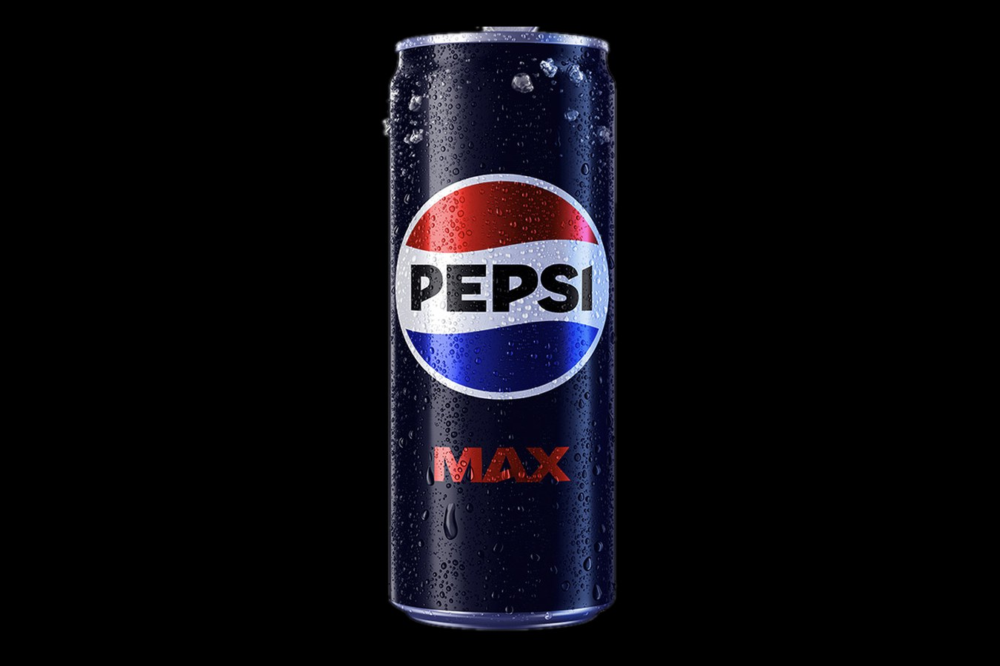

← Series← Серія← Serial · EPISODE 01 · EATING OUT · 30 sЕПІЗОД 01 · ЇЖА ПОЗА ДОМОМ · 30 сODCINEK 01 · JEDZENIE NA MIEŚCIE · 30 s
SodaStop
A night car park. A couple eats burgers in the car. Pepsi Patrol knocks on the window — eating without Pepsi MAX is a serious offence.
Нічна парковка. Пара їсть бургери в машині. Pepsi Patrol стукає у вікно — їсти без Pepsi MAX — серйозне порушення.
Nocny parking. Para je burgery w samochodzie. Pepsi Patrol puka w szybę — jedzenie bez Pepsi MAX to poważne wykroczenie.
OverviewКороткоW skrócie
TaskЗадачаZadanie
Adapt the UK “SodaStop” spot for Pepsi MAX Poland as a 30-second film the viewer believes is real footage — made entirely with generative AI.
Адаптувати британський ролик «SodaStop» для Pepsi MAX Польща: 30 секунд, які глядач сприйме як справжню зйомку, — повністю на генеративному AI.
Przenieść brytyjski spot „SodaStop” dla Pepsi MAX Polska na 30-sekundowy film, który widz weźmie za prawdziwe nagranie — w całości z pomocą generatywnego AI.
IdeaРішенняPomysł
CCTV turns into cinema. The story starts as a surveillance record and becomes a handheld report by an invisible amateur — then returns to CCTV for the verdict.
CCTV перетворюється на кіно. Історія починається як запис камери спостереження, стає ручним репортажем невидимого аматора — і повертається до CCTV для вироку.
Monitoring zamienia się w kino. Historia zaczyna się jako zapis z kamery, przechodzi w relację z ręki niewidzialnego amatora — i wraca do monitoringu na werdykt.
ResultРезультатWynik
A finished 30-second film in Polish with English and Ukrainian voice-over versions, delivered as TV and web masters from 4K ProRes to H.264.
Готовий 30-секундний фільм польською з версіями англійською та українською, зданий як ТБ- і веб-майстри від 4K ProRes до H.264.
Gotowy 30-sekundowy film po polsku z wersjami z lektorem angielskim i ukraińskim, mastery TV i web od 4K ProRes po H.264.
The briefБрифBrief
The client's brief fixed the script, the lines in Polish and a shot-by-shot timing. The reference was clear: the British SodaStop films — documentary, raw, deadpan. And a craft bar: the result should not look like AI.
Бриф клієнта задавав сценарій, польські репліки і покадровий таймінг. Референс був чітким: британські ролики SodaStop — документальні, сирі, з абсолютно серйозним гумором. І планка якості: результат не має виглядати як AI.
Brief klienta ustalał scenariusz, kwestie po polsku i timing ujęcie po ujęciu. Wzór był jasny: brytyjskie filmy SodaStop — dokumentalne, surowe, z kamienną twarzą. I poprzeczka rzemiosła: wynik nie może wyglądać na AI.
Make the artificial imperfect enough to be taken for real.
Зробити штучне настільки недосконалим, щоб його прийняли за справжнє.
Uczynić sztuczne na tyle niedoskonałym, by uznano je za prawdziwe.
That is the main challenge of the project. Generative models are trained to make things beautiful. Here we needed the opposite: car-park light, accidental framing, people who don't know they're in an ad.
У цьому головний виклик проєкту. Генеративні моделі навчені робити красиво. Нам потрібне було протилежне: світло парковки, випадкове кадрування, люди, які не знають, що вони в рекламі.
To główne wyzwanie projektu. Modele generatywne są uczone, by było pięknie. Tu potrzebowaliśmy odwrotności: parkingowego światła, przypadkowych kadrów, ludzi, którzy nie wiedzą, że grają w reklamie.
Director's solutionРежисерське рішенняRozwiązanie reżyserskie
On an ordinary evening car park, Wojciek and Ewa are quietly eating in their car until Pepsi Patrol interrupts: Aga and Darek have detected a serious offence — eating without Pepsi MAX.
На звичайній вечірній парковці Войцек і Єва спокійно їдять у машині, доки їх не перериває Pepsi Patrol: Ага й Дарек виявили серйозне порушення — їжу без Pepsi MAX.
Na zwykłym wieczornym parkingu Wojciek i Ewa spokojnie jedzą w samochodzie, dopóki nie przerywa im Pepsi Patrol: Aga i Darek wykryli poważne wykroczenie — jedzenie bez Pepsi MAX.
Three CCTV angles hold the geography: the arrival, the side view during the operation, the exit under the end titles. Between them — a handheld camera of an amateur who is everywhere but never enters the story: no voice, no laugh, no breath.
Три ракурси CCTV тримають географію: прибуття, вигляд збоку під час операції, відхід під фінальні титри. Між ними — ручна камера аматора, який усюди, але ніколи не входить в історію: ні голосу, ні смішка, ні подиху.
Trzy ujęcia z monitoringu trzymają geografię: przyjazd, widok z boku w trakcie akcji, odjazd pod napisami końcowymi. Pomiędzy nimi — kamera z ręki amatora, który jest wszędzie, ale nigdy nie wchodzi do historii: bez głosu, bez śmiechu, bez oddechu.
Sleepy start → a knock on the glass → Aga rattles off the charge like a traffic cop, hypnotising the suspect → a micro-pause of confusion → the longest shot goes to the first sip and a restrained “Wow” → fast comedy again → a long CCTV finale under the titles.
Сонний початок → стук у скло → Ага тараторить звинувачення як дорожня поліцейська, гіпнотизуючи підозрюваного → мікропауза розгубленості → найдовший кадр — перший ковток і стримане «Wow» → знову швидка комедія → довгий CCTV-фінал під титри.
Senny początek → pukanie w szybę → Aga recytuje zarzut jak drogówka, hipnotyzując podejrzanego → mikropauza konsternacji → najdłuższe ujęcie należy do pierwszego łyku i powściągliwego „Wow” → znów szybka komedia → długi finał z monitoringu pod napisami.
Wojciek obeys whoever sounds confident enough. Ewa reads the rules first and accepts her can almost royally. They never leave the car — the patrol always works from the driver's side.
Войцек підкоряється будь-кому, хто звучить достатньо впевнено. Єва першою розгадує правила й приймає свою банку майже по-королівськи. Вони ніколи не виходять з машини — патруль завжди працює з боку водія.
Wojciek słucha każdego, kto mówi wystarczająco pewnie. Ewa najpierw czyta regulamin, a puszkę przyjmuje niemal po królewsku. Nigdy nie wysiadają z auta — patrol zawsze działa od strony kierowcy.
From storyboard to screenВід сторіборду до екранаOd storyboardu do ekranu
The treatment storyboard (left) and the final shots (right). The structure held; the details changed where the film needed it — for example the blue can became the black slim Pepsi MAX.
Сторіборд із тритменту (ліворуч) і фінальні кадри (праворуч). Структура втрималась; деталі змінювались там, де цього потребував фільм, — наприклад, синя банка стала чорною slim Pepsi MAX.
Storyboard z treatmentu (po lewej) i ujęcia finalne (po prawej). Struktura się utrzymała; szczegóły zmieniły się tam, gdzie wymagał tego film — na przykład niebieska puszka stała się czarnym slim Pepsi MAX.


ShotКадрUjęcie 01 · 00:00CCTV-1. Establishing: the van, the car, the patrol on its way.CCTV-1. Знайомство: фургон, машина, патруль уже йде.Monitoring 1. Plan ogólny: bus, samochód, patrol w drodze.
ShotКадрUjęcie 02 · 00:02Wojciek and Ewa eat. A knock on the glass.Войцек і Єва їдять. Стук у скло.Wojciek i Ewa jedzą. Pukanie w szybę.
ShotКадрUjęcie 03 · 00:03Aga shows her badge and states the offence.Ага показує посвідчення й оголошує порушення.Aga pokazuje legitymację i ogłasza wykroczenie.
ShotКадрUjęcie 04 · 00:07The can with a straw — like a breathalyser.Банка з трубочкою — як алкотестер.Puszka ze słomką — jak alkomat.
ShotКадрUjęcie 05 · 00:12The first sip. “Wow.”Перший ковток. «Wow».Pierwszy łyk. „Wow.”
ShotКадрUjęcie 06 · 00:17CCTV-2. “Better, right? Darek, will you see to the lady?”CCTV-2. «Краще, правда? Дареку, підійдеш до пані?»Monitoring 2. „Lepiej, prawda? Darek, zajmiesz się panią?”
ShotКадрUjęcie 07 · 00:19Darek brings Ewa her can.Дарек приносить Єві її банку.Darek przynosi Ewie jej puszkę.
ShotКадрUjęcie 08 · 00:22“By the way… are you security?”«До речі… ви з охорони?»„A tak w ogóle… jesteście z ochrony?”
ShotКадрUjęcie 09 · 00:24“No. We're with Pepsi.”«Ні. Ми з Pepsi».„Nie. Jesteśmy z Pepsi.”
ShotКадрUjęcie 10 · 00:26CCTV-3. Case closed. End titles.CCTV-3. Справу закрито. Фінальні титри.Monitoring 3. Sprawa zamknięta. Napisy końcowe.
Casting & worldКастинг і світObsada i świat
Before any motion was generated, the world was fixed: cast, costumes, the car, the van, the location, the product. Each reference has exactly one job — so the model never mixes a face with a car park.
До генерації руху світ був зафіксований: кастинг, костюми, машина, фургон, локація, продукт. Кожен референс має рівно одне завдання — щоб модель не змішувала обличчя з парковкою.
Zanim powstał jakikolwiek ruch, świat został ustalony: obsada, kostiumy, samochód, bus, lokacja, produkt. Każda referencja ma dokładnie jedno zadanie — żeby model nigdy nie pomieszał twarzy z parkingiem.
Screen testsВідеопробиZdjęcia próbne
Every new character got a moving screen test before a single shot was generated. Switch to “In the film” to see and hear the same person in the film; the speaker turns sound on, a click enlarges.
Кожен новий персонаж отримав відеопробу ще до генерації першого плану. Перемкніть на «У фільмі», щоб побачити й почути ту саму людину у фільмі; динамік вмикає звук, клік — збільшує.
Każda nowa postać dostała zdjęcia próbne, zanim wygenerowano pierwsze ujęcie. Przełącz na „W filmie”, by zobaczyć i usłyszeć tę samą osobę w filmie; głośnik włącza dźwięk, kliknięcie powiększa.
Badge, vest, the stare: a full turnaround plus the deadpan that carries the whole series.
Бейдж, жилет, погляд: повний розворот і та сама незворушність, на якій тримається вся серія.
Legitymacja, kamizelka, spojrzenie: pełny obrót i ta kamienna twarz, na której stoi cały serial.
Size and warmth in one half-turn: a big man who never looks threatening.
Габарити й теплота в одному півоберті: великий чоловік, який ніколи не виглядає загрозливо.
Postura i ciepło w jednym półobrocie: duży facet, który nigdy nie wygląda groźnie.
A soft, easily led face: someone who believes anyone who speaks confidently enough.
М'яке, піддатливе обличчя: людина, яка вірить кожному, хто говорить досить упевнено.
Miękka, uległa twarz: ktoś, kto wierzy każdemu, kto mówi wystarczająco pewnie.
Red hair and a cool, slightly royal calm — the one who reads the rules first.
Руде волосся і прохолодний, трохи королівський спокій — та, що спершу читає правила.
Rude włosy i chłodny, nieco królewski spokój — ta, która najpierw czyta regulamin.


ProductionВиробництвоProdukcja
A pipeline built after a failed first attempt. The first version was lively, but every fix made it fall apart. Version 2.1 started over from the treatment itself.
Пайплайн, побудований після невдалої першої спроби. Перша версія була живою, але кожна правка її розвалювала. Версія 2.1 почалася знову з самого тритменту.
Proces zbudowany po nieudanej pierwszej próbie. Pierwsza wersja była żywa, ale każda poprawka ją rozsypywała. Wersja 2.1 zaczęła się od nowa — od samego treatmentu.
- 01
Treatment → shot list
Тритмент → шот-лист
Treatment → shot lista
A frame-accurate shot list for 30 seconds, with camera rules for each shot.
Шот-лист на 30 секунд із точним таймінгом і правилами камери для кожного кадру.
Shot lista na 30 sekund z dokładnością do klatki, z zasadami kamery dla każdego ujęcia.
- 02
References
Референси
Referencje
Separate sheets: location without people, car exterior, interior, four characters, product.
Окремі аркуші: локація без людей, екстер'єр машини, салон, чотири персонажі, продукт.
Osobne arkusze: lokacja bez ludzi, samochód z zewnątrz, wnętrze, cztery postacie, produkt.
- 03
One-pass generation
Генерація одним проходом
Generacja w jednym przejściu
Seedance 2.5 Multishot in Magnific: the whole 30-second film in one pass with exact cut points. Draft five became the base.
Seedance 2.5 Multishot у Magnific: увесь 30-секундний фільм одним проходом із точними склейками. П'ята чернетка стала основою.
Seedance 2.5 Multishot w Magnific: cały 30-sekundowy film w jednym przebiegu z dokładnymi punktami cięć. Podstawą został piąty szkic.
- 04
Spot fixes
Точкові правки
Poprawki punktowe
Individual shots replaced, the final CCTV generated separately, the can repainted in post.
Окремі кадри замінено, фінальний CCTV згенеровано окремо, банку перефарбовано на посту.
Wymiana pojedynczych ujęć, finałowy monitoring wygenerowany osobno, puszka przemalowana w postprodukcji.
- 05
Upscale
Апскейл
Upscale
Topaz Proteus ×2 to 4K — it kept faces and texture better than the alternatives on this footage.
Topaz Proteus ×2 до 4K — на цьому матеріалі краще за альтернативи зберіг обличчя й фактуру.
Topaz Proteus ×2 do 4K — na tym materiale lepiej od alternatyw zachował twarze i fakturę.
- 06
Edit, grade, titles
Монтаж, колір, титри
Montaż, kolor, napisy
After Effects: edit, grade, camera defects, CCTV overlays, packshot titles for four languages.
After Effects: монтаж, колір, дефекти камери, CCTV-інтерфейс, титри пекшоту чотирма мовами.
After Effects: montaż, koloryzacja, defekty kamery, nakładki monitoringu, napisy packshotu w czterech językach.
- 07
Sound
Звук
Dźwięk
Dialogue, foley, ambience and music stems mixed to EBU R128: −23 LUFS for TV, −14 LUFS for web.
Стеми діалогу, фоулі, атмосфери й музики, зведені за EBU R128: −23 LUFS для ТБ, −14 LUFS для вебу.
Dialogi, efekty, atmosfera i muzyka zmiksowane wg EBU R128: −23 LUFS dla TV, −14 LUFS dla sieci.
Problems & solutionsПроблеми й рішенняProblemy i rozwiązania
The first version collapsed under edits: every fix produced new bugs.
Перша версія розвалювалась від правок: кожна правка народжувала нові баги.
Pierwsza wersja rozsypywała się przy poprawkach: każda poprawka rodziła nowe błędy.
SOLUTIONРІШЕННЯROZWIĄZANIERestart from the treatment. Generate the whole film once for continuity, then only surgical fixes — never a full regeneration.
Новий старт від тритменту. Увесь фільм генерується один раз заради цілісності, далі — лише хірургічні правки, без повної перегенерації.
Start od nowa, od treatmentu. Cały film generowany raz dla ciągłości, potem tylko poprawki chirurgiczne — nigdy pełna regeneracja.
Too many references turned into “mush”: faces, car and location bled into each other.
Забагато референсів перетворювались на «кашу»: обличчя, машина й локація змішувались.
Zbyt wiele referencji dawało „papkę”: twarze, samochód i lokacja przenikały się nawzajem.
SOLUTIONРІШЕННЯROZWIĄZANIEOne reference — one job. Characters are placed into the scene only on key frames.
Один референс — одне завдання. Персонажів «саджаємо» в сцену лише на ключових кадрах.
Jedna referencja — jedno zadanie. Postacie trafiają do sceny dopiero na klatkach kluczowych.
The model wouldn't hold the brand: the can kept changing colour and label.
Модель не тримала бренд: банка змінювала колір і етикетку.
Model nie trzymał marki: puszka ciągle zmieniała kolor i etykietę.
SOLUTIONРІШЕННЯROZWIĄZANIERepaint in post: object tracking plus a colour mask on every frame — the black slim Pepsi MAX in every shot.
Перефарбування на посту: трекінг об'єкта й колірна маска на кожному кадрі — чорна slim Pepsi MAX у кожному плані.
Przemalowanie w postprodukcji: tracking obiektu plus maska koloru na każdej klatce — czarny slim Pepsi MAX w każdym ujęciu.
Background characters in the “Wow” shot looked frozen.
Персонажі на задньому плані в кадрі «Wow» виглядали застиглими.
Postacie w tle ujęcia „Wow” wyglądały na zamrożone.
SOLUTIONРІШЕННЯROZWIĄZANIEWe tried subtle breathing and blinking — both read as defects. The shot stayed as generated: a still face is less noticeable than a fake movement.
Пробували легке дихання й моргання — обидва читались як брак. Кадр лишився як є: нерухоме обличчя помітне менше, ніж фальшивий рух.
Próbowaliśmy subtelnego oddechu i mrugania — oba odbierane były jak defekt. Ujęcie zostało tak, jak wygenerowane: nieruchoma twarz rzuca się w oczy mniej niż sztuczny ruch.
AI footage looks too clean to be documentary.
AI-зображення занадто чисте для документалки.
Materiał AI jest zbyt czysty jak na dokument.
SOLUTIONРІШЕННЯROZWIĄZANIEA layer of real-camera defects — chromatic fringing, halation, soft edges, vignette, grain; CCTV desaturated with its own on-screen data.
Шар дефектів справжньої камери — хроматична облямівка, ореол, м'які краї, віньєтка, зерно; CCTV знебарвлено, з власним екранним інтерфейсом.
Warstwa defektów prawdziwej kamery — aberracja, halacja, miękkie brzegi, winieta, ziarno; monitoring odbarwiony, z własnymi danymi na ekranie.
Lip-sync for other languages made faces look plastic.
Ліпсинк для інших мов робив обличчя пластиковими.
Lip-sync w innych językach dawał plastikowe twarze.
SOLUTIONРІШЕННЯROZWIĄZANIEVoice-over instead of dubbing — see Localisation below.
Закадровий переклад замість дубляжу — див. «Локалізація» нижче.
Lektor zamiast dubbingu — patrz Lokalizacja niżej.
Look & soundВигляд і звукObraz i dźwięk
Neutral, slightly cold evening palette; the interior pulled away from orange, saturation lowered. Pepsi blue and red are the only controlled accents. CCTV in black and white, at half the strength of the camera defects.
Нейтральна, трохи холодна вечірня палітра; салон відведено від рудого, насиченість знижено. Синій і червоний Pepsi — єдині контрольовані акценти. CCTV чорно-білий, дефекти камери на ньому вдвічі слабші.
Neutralna, lekko chłodna paleta wieczoru; wnętrze odciągnięte od pomarańczu, nasycenie obniżone. Błękit i czerwień Pepsi to jedyne kontrolowane akcenty. Monitoring czarno-biały, z defektami kamery o połowę słabszymi.
Natural sound first: car park ambience, wrappers, the can, the straw. The client's licensed track starts flat, “as if from the street”, and opens up in full on the car horn at the end.
Спершу природний звук: атмосфера парковки, обгортки, банка, трубочка. Ліцензований трек клієнта звучить пласко, «ніби з вулиці», і розкривається на повну на гудку в кінці.
Najpierw naturalny dźwięk: atmosfera parkingu, papierki, puszka, słomka. Licencjonowany utwór klienta zaczyna się płasko, „jakby z ulicy”, i otwiera się w pełni na klaksonie na końcu.
LocalisationЛокалізаціяLokalizacja
One picture, several languages: the Polish original plus English and Ukrainian versions. We tested three approaches on the dialogue shots before choosing.
Одне зображення, кілька мов: польський оригінал плюс англійська й українська версії. Перед вибором ми протестували три підходи на діалогових кадрах.
Jeden obraz, kilka języków: polski oryginał oraz wersje angielska i ukraińska. Zanim wybraliśmy, przetestowaliśmy trzy podejścia na ujęciach z dialogiem.
Rejected. The regenerated mouths read as plastic, even with added skin texture.
Відхилено. Перегенеровані губи читались як пластик, навіть із доданою фактурою шкіри.
Odrzucony. Wygenerowane od nowa usta wyglądały plastikowo, nawet z dodaną fakturą skóry.
Rejected. The mismatch between articulation and speech is obvious.
Відхилено. Розбіжність артикуляції й мови очевидна.
Odrzucony. Rozjazd artykulacji i mowy jest oczywisty.
Chosen. The Polish line is heard, ducks by 14 dB after a third of a second, and the translation plays over it in the characters' cloned voices — an honest, documentary-friendly convention.
Обрано. Польську репліку чути, через третину секунди вона стишується на 14 дБ, і поверх звучить переклад клонованими голосами героїв — чесна конвенція, що пасує документальному стилю.
Wybrany. Słychać polską kwestię, po jednej trzeciej sekundy ścisza się o 14 dB, a tłumaczenie idzie na niej sklonowanymi głosami postaci — uczciwa konwencja, przyjazna dokumentowi.
End titles are localised in every version; #BETTERWITHPEPSI stays in English.
Фінальні титри локалізовано в кожній версії; #BETTERWITHPEPSI лишається англійською.
Napisy końcowe są lokalizowane w każdej wersji; #BETTERWITHPEPSI zostaje po angielsku.
Lesson for the series: keep lines off visible mouths — radio, backs, POV, distant CCTV. It's the cheapest localisation there is.
Урок для серії: прибирати репліки з видимих губ — рація, спина, POV, дальній CCTV. Це найдешевша локалізація.
Lekcja dla serialu: trzymać kwestie z dala od widocznych ust — krótkofalówka, plecy, POV, odległy monitoring. To najtańsza lokalizacja, jaka istnieje.
Tech passportТехнічний паспортPaszport techniczny
CreditsТитриTwórcy
- DirectorРежисерReżyser
- Andrey TimoschukАндрій ТимощукAndrey TimoschukDirector · AI production · edit · grade · soundРежисер · AI-продакшн · монтаж · колір · звукReżyseria · produkcja AI · montaż · koloryzacja · dźwięk
- CLIENTКЛІЄНТKLIENT
- Pepsi MAX PolandPepsi MAX ПольщаPepsi MAX Polska
- Based onЗа мотивамиNa podstawie
- Pepsi MAX UK “SodaStop” campaignбританської кампанії Pepsi MAX «SodaStop»kampanii Pepsi MAX UK „SodaStop”
- ToolsІнструментиNarzędzia
- Magnific (Seedance 2.5, Seedream, Nano Banana, ElevenLabs voices) · Topaz · After Effects · Python / ffmpeg · ClaudeMagnific (Seedance 2.5, Seedream, Nano Banana, голоси ElevenLabs) · Topaz · After Effects · Python / ffmpeg · ClaudeMagnific (Seedance 2.5, Seedream, Nano Banana, głosy ElevenLabs) · Topaz · After Effects · Python / ffmpeg · Claude